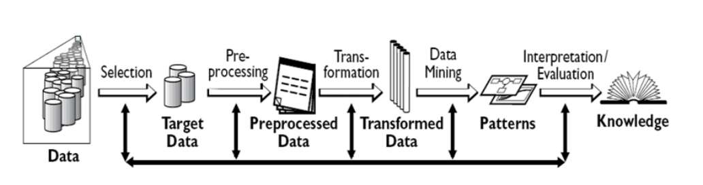
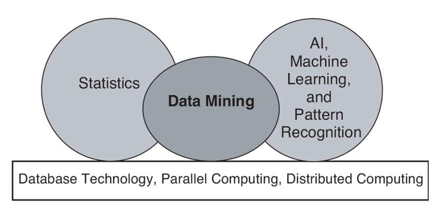
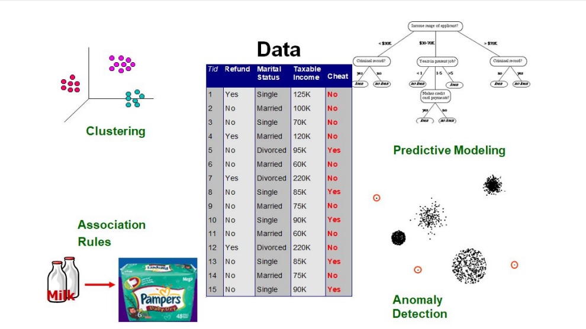
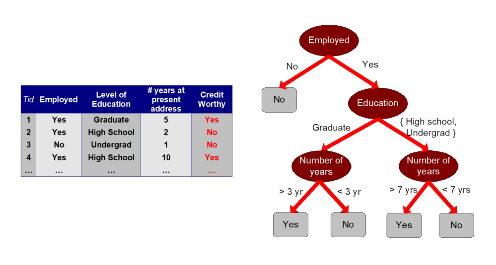
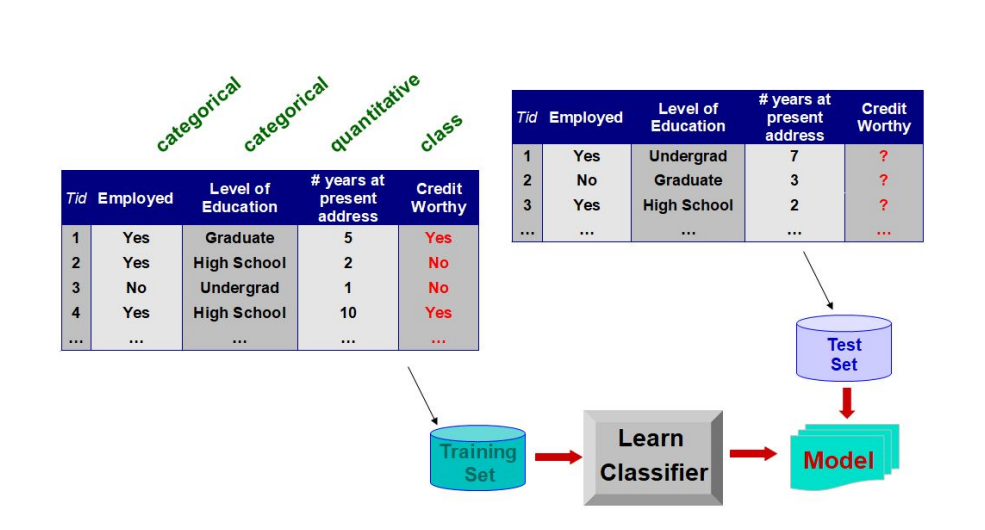
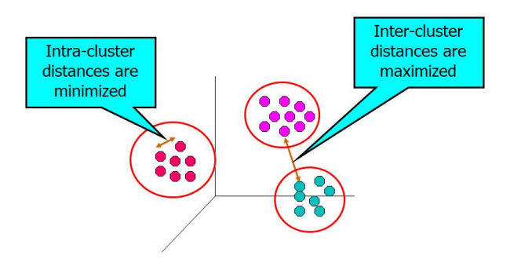

- Introducción a la Minería de Datos
- La minería de datos es tipo de tecnología que combina métodos de análisis de datos
tradicionales con sofisticados algoritmos para procesar grandes volúmenes de datos.
- Extracción no trivial de información implícita, previamente desconocida y
potencialmente útil de los datos.
- Exploración y análisis, por medios automáticos o semautomáticos, de grandes
cantidades de datos para descubrir patrones significativos.
- Motivacion de la Minería de Datos
Las técnicas tradicionales son ineficientes frente a datos como los siguientes:
- Muchas instancias.
- Número extenso de atributos.
- Atributos Heterogéneos y complejos.
- Distribuidos
El enfoque estadístico tradicional se basa en un paradigma de hipótesis y prueba.
Desafortunadamente, este proceso es extremadamente laborioso.
- Contexto de la Minería de Datos
El proceso KDD (Knowledge Discovery in Databases)

- Aplicaciones de la Minería de Datos
- Detección de Fraudes.
- Control de Clientes.
- Patrones de Compra.
- Segmentacion de Clientes.
- Prediccion de Ventas.
- Medicina.
- Inversión.
- Origen de la Minería de Datos
Mezcla de diversas áreas del conocimiento, se mezclan las áreas de matemática,
computación y estadística.

- Principales objetivos de la Minería de Datos
- Métodos de predicción
Usa algunas variables para predecir valores desconocidos o futuros de otras.
- Métodos de descripción
Encuentra patrones interpretables por humanos que describen los datos.

- Modelo de predicción: Clasificación


- Aplicaciones de Clasificación:
- Clasificar las transacciones de tarjetas de crédito como legítimas o fraudulentas.
- Clasificación terrestre (cuerpos de agua, áreas urbanas, bosques, etc.) utilizando
datos satelitales.
- Categorizar noticias como finanzas, clima, entretenimiento, deportes, etc.
- Identificando intrusos en el ciberespacio.
- Predicción de células tumorales como benignas o malignas.
- Clasificación de estructuras secundarias de proteínas como hélice-alpha,
lámina-beta o bobina aleatoria.
- Regresion
Definición:
Predecir un valor de una variable de valor continuo dada en base a los valores de
otras variables, asumiendo un modelo de dependencia lineal o no lineal. Ampliamente estudiado en estadística.
- Clustering
Definición:
Encontrar grupos de objetos tales que los objetos en un grupo sean similares (o
relacionados) entre sí y diferentes (o no relacionados) de los objetos en otro grupos
